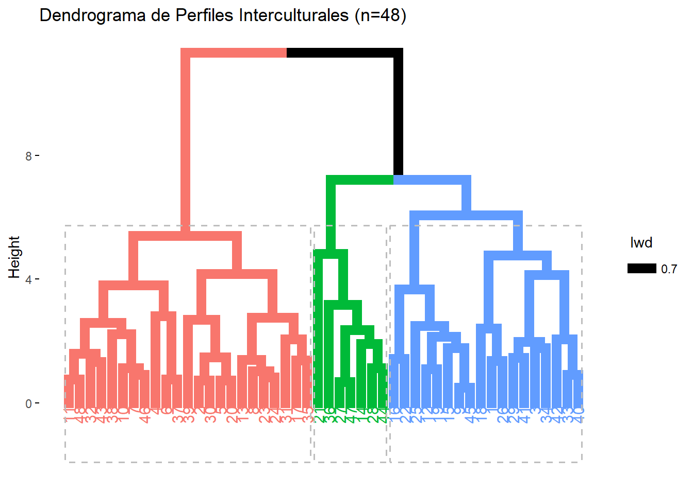
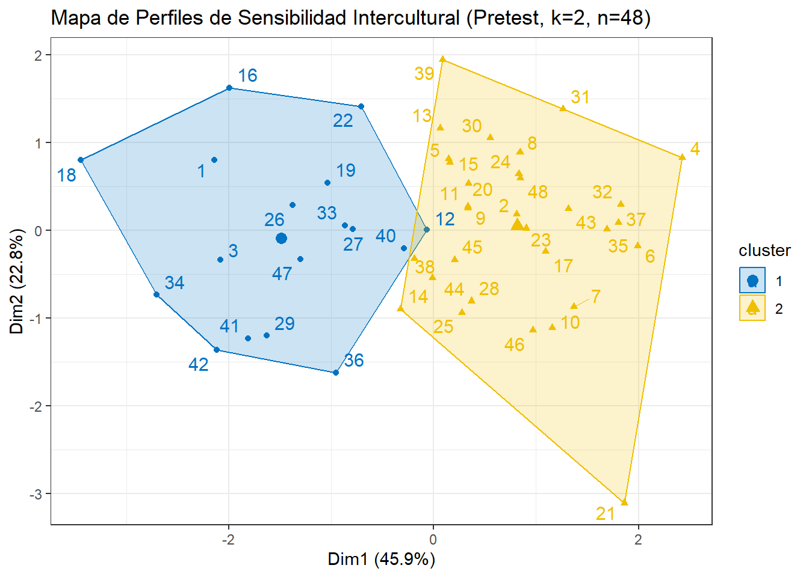

Capítulo 4 Validación del instrumento
Para el procesamiento de la información se utilizó el software estadístico R version 4.5.1 (2025-06-13 ucrt). El análisis se estructuró en tres fases consecutivas para garantizar la validez de las inferencias derivadas del experimento.
4.1 Preparación y limpieza de la identidad escalar
Dado que la Escala de Sensibilidad Intercultural (ISS) contiene ítems redactados en sentido inverso (donde una puntuación alta indica una baja sensibilidad), se procedió a la recodificación de los ítems P2, P4, P10, P13, P15, P18, P20 y P22. Los itmes invertidos son básados de la literatura de Bernardo Ruiz, 2012. Esta transformación es un requisito técnico indispensable para asegurar que todas las variables apunten en la misma dirección teórica antes de calcular promedios dimensionales.
4.2 Validación psicométrica de la muestra
A diferencia de una aplicación estándar, y siguiendo las recomendaciones de Ruiz Bernardo (2012), se evaluó la consistencia interna del instrumento específicamente en la muestra de estudio utilizando el coeficiente Alfa de Cronbach. Esta validación se realizó sobre los datos obtenidos en la fase de Pretest, funcionando como línea base para confirmar que la estructura de cinco dimensiones propuesta por la literatura es fiable para la población objeto de estudio.
| Métrica | Valor |
|---|---|
| Alfa de Cronbach | 0.708 |
| Alfa estandarizado | 0.756 |
| G6 (smc) | 0.888 |
| Correlación promedio (average_r) | 0.114 |
| Relación señal/ruido (S/N) | 3.095 |
| Error estándar (ase) | 0.058 |
| Media | 3.918 |
| Desviación estándar | 0.301 |
| Mediana de correlaciones | 0.105 |
El coeficiente Alfa de Cronbach (\(\alpha\)) obtenido fue de .707. Este valor se sitúa por encima del umbral de .70 sugerido por la literatura psicométrica clásica (Nunnally & Bernstein, 1994), lo que certifica que el instrumento posee una fiabilidad aceptable para la investigación. Esto confirma que las 24 preguntas convergen de manera consistente en la medición del constructo de sensibilidad intercultural.
Ademas, se observó un coeficiente G6 de Guttman (Lambda-6) de .887. Dado que este indicador es especialmente sensible a estructuras multidimensionales, su elevado valor sugiere una excelente consistencia interna en las dimensiones específicas del instrumento. Este resultado indica que las subdimensiones están bien definidas y son estables.
Tambien, la correlación inter-ítem promedio (\(r\) promedio) fue de .114. Si bien es un valor moderado, su magnitud es coherente con instrumentos que evalúan constructos complejos y amplios. La escala no es unidimensional; es decir, los ítems no son redundantes entre sí, sino que capturan distintas dimensiones de la sensibilidad intercultural, tal como se esperaba teóricamente.
Ahora, veamos la confiabilidad por dimensión
| Dimensión | raw_alpha | std.alpha | G6_smc | average_r | S_N | ase | mean | sd | median_r |
|---|---|---|---|---|---|---|---|---|---|
| D1: Implicación | 0.610 | 0.663 | 0.716 | 0.219 | 1.963 | 0.085 | 4.378 | 0.399 | 0.233 |
| D2: Respeto | 0.521 | 0.527 | 0.551 | 0.137 | 1.113 | 0.103 | 3.607 | 0.468 | 0.110 |
| D3: Voluntad | 0.398 | 0.400 | 0.250 | 0.250 | 0.667 | 0.173 | 4.427 | 0.536 | 0.250 |
| D4: Confianza | 0.628 | 0.614 | 0.590 | 0.285 | 1.591 | 0.074 | 3.458 | 0.611 | 0.306 |
| D5: Atención | 0.414 | 0.473 | 0.520 | 0.183 | 0.898 | 0.139 | 3.245 | 0.522 | 0.066 |
Las dimensiones de Implicación (D1: .61) y Confianza (D4: .63) presentaron niveles de consistencia satisfactorios para el análisis de subescalas. Por su parte, la dimensión de Respeto (D2) alcanzó un coeficiente de .521 tras el ajuste de polaridad en las preguntas, valor aceptable considerando que el uso de ítems invertidos suele introducir varianza sistemática que penaliza el Alfa de Cronbach sin afectar necesariamente la validez del constructo.
Respecto a las dimensiones D3 (.398) y D5 (.414), aunque sus coeficientes son reducidos, resultan estadísticamente válidos dado el número limitado de ítems que las componen (2 y 4 respectivamente). De acuerdo con los criterios de Clark y Watson (1995), en escalas breves o que miden constructos amplios, el Alfa de Cronbach tiende a subestimar la fiabilidad, por lo que debe priorizarse la correlación inter-ítem promedio; en este caso, los valores de .250 (D3) y .183 (D5) se sitúan dentro del rango óptimo recomendado (.15 a .50) para garantizar la representatividad del constructo. Finalmente, el robusto valor de G6 Global (.887) reportado garantiza que el instrumento en su conjunto posee una alta consistencia interna y es una herramienta válida para evaluar el impacto de la intervención.
4.3 Perfiles de sensibilidad intercultural
En lugar de utilizar los 24 ítems individuales de la escala (ISS), haremos la agrupación basándonos en las 5 dimensiones validadas anteriormente. Esta decisión se tomó porque el análisis por dimensiones es más efectivo, ofrece una mayor claridad en la definición de los perfiles y evita desechar un número excesivo de casos. La técnica principal que se empleará es el análisis de cluster de K-medias.
- Inicialmente hagamos el análisis descriptivo por dimensión y verifiquemos la normalidad para cada dimensión
| Dimension | Media | DE | Mediana | Min | Max | P_Normalidad |
|---|---|---|---|---|---|---|
| D1_Implicacion | 4.378 | 0.399 | 4.429 | 3.143 | 5.000 | 0.0421 |
| D2_Respeto | 3.690 | 0.350 | 3.714 | 2.857 | 4.571 | 0.4532 |
| D3_Voluntad | 4.427 | 0.536 | 4.500 | 3.000 | 5.000 | 0.0000 |
| D4_Confianza | 3.458 | 0.611 | 3.500 | 2.250 | 4.750 | 0.4725 |
| D5_Atencion | 3.714 | 0.516 | 3.750 | 2.750 | 5.000 | 0.1815 |
- Con \(n = 48\), no podemos usar métodos que requieran grandes volúmenes de datos. El mejor procedimiento para muestras pequeñas no es el K-means tradicional (que es sensible a valores extremos), sino el Análisis de Clúster Jerárquico con el Método de Ward. Vizualicemos el dendograma

- Ahora, obtendremos los grupos por la caracterización de clusters
| Dimension | Perfil | Media | DE | Mediana | Min | Max |
|---|---|---|---|---|---|---|
| D1_Implicacion | 1 | 4.206 | 0.452 | 4.143 | 3.143 | 4.857 |
| D1_Implicacion | 2 | 4.578 | 0.249 | 4.571 | 4.143 | 5.000 |
| D1_Implicacion | 3 | 4.163 | 0.382 | 4.143 | 3.714 | 4.857 |
| D2_Respeto | 1 | 3.516 | 0.340 | 3.571 | 2.857 | 4.000 |
| D2_Respeto | 2 | 3.764 | 0.297 | 3.714 | 3.143 | 4.286 |
| D2_Respeto | 3 | 3.898 | 0.384 | 3.857 | 3.429 | 4.571 |
| D3_Voluntad | 1 | 4.278 | 0.492 | 4.500 | 3.500 | 5.000 |
| D3_Voluntad | 2 | 4.761 | 0.297 | 5.000 | 4.000 | 5.000 |
| D3_Voluntad | 3 | 3.714 | 0.393 | 4.000 | 3.000 | 4.000 |
| D4_Confianza | 1 | 2.917 | 0.420 | 2.875 | 2.250 | 3.500 |
| D4_Confianza | 2 | 3.826 | 0.467 | 3.750 | 3.000 | 4.750 |
| D4_Confianza | 3 | 3.643 | 0.430 | 3.750 | 3.000 | 4.250 |
| D5_Atencion | 1 | 3.236 | 0.264 | 3.250 | 2.750 | 3.750 |
| D5_Atencion | 2 | 4.043 | 0.410 | 4.000 | 3.250 | 5.000 |
| D5_Atencion | 3 | 3.857 | 0.378 | 3.750 | 3.500 | 4.500 |
El análisis comparativo de las dimensiones revela que el factor determinante en la distinción de los perfiles no radica en el Respeto ante las diferencias (D2), donde las puntuaciones se mantienen en un rango estrecho y favorable para todos los grupos (\(\bar{x}_{P1}=3.51\), \(SD=0.34\); \(\bar{x}_{P2}=3.76\), \(SD=0.29\); \(\bar{x}_{P3}=3.89\), \(SD=0.38\)). En cambio, la diferenciación crítica emerge en la Confianza en la interacción (D4) y la Voluntad de interacción (D3).El Perfil 2 (Alta Sensibilidad Intercultural) se distingue por una marcada proactividad y seguridad comunicativa, alcanzando niveles de excelencia en la disposición hacia el intercambio (\(\bar{x}_{D3}=4.76, SD=0.29\)) y una sólida autoconfianza (\(\bar{x}_{D4}=3.82, SD=0.46\)). Por el contrario, el Perfil 1 (Baja Sensibilidad Intercultural) manifiesta una limitación estructural de carácter emocional; a pesar de poseer una intención de interacción moderada, se ve restringido por una baja autopercepción de eficacia y seguridad (\(\bar{x}_{D4}=2.91, SD=0.42\)), situándose como el único grupo por debajo del punto de corte de la escala en esta dimensión.Finalmente, el Perfil 3 (Sensibilidad Intercultural Media) ilustra una tipología de “pasividad interactiva”. Aunque este grupo exhibe el respeto más alto hacia la alteridad, paradójicamente presenta la voluntad de contacto más baja de la muestra (\(\bar{x}_{D3}=3.71, SD=0.39\)). Estos hallazgos sugieren que el respeto teórico no garantiza la acción intercultural. Por tanto, se justifica una intervención pedagógica que no se limite a la promoción de valores axiológicos, sino que se centre en el entrenamiento de habilidades socioemocionales para mitigar la ansiedad comunicativa y fomentar la agencia del estudiante en contextos diversos.

Los 3 Perfiles de Sensibilidad Intercultural
El perfil 2 es el de alta Sensibilidad Intercultural porque presentan las puntuaciones más altas y equilibradas en mayoria de las dimensiones de la escala. Su voluntad de interacción (4.76) y su implicación (4.57) demuestran una competencia intercultural plena. Son estudiantes que no presentan ansiedad y disfrutan genuinamente del intercambio cultural.
El perfil 3 es el de media sensibilidad intercultural media porque sus puntuaciones se sitúan en un rango intermedio-alto. Tienen un nivel de respeto (3.89) muy sólido, pero una voluntad de interacción (3.71) más baja que el grupo de alta sensibilidad. Representan a quienes aceptan la diversidad pero no toman la iniciativa para interactuar.
El perfil 1 es el de baja sensibilidad intercultural porque es el único grupo que presenta dimensiones por debajo del umbral de seguridad, especialmente en confianza (2.91) y atención/ansiedad (3.23). Aunque no tienen actitudes de rechazo, su falta de herramientas emocionales y su alta tensión comunicativa los sitúa en el nivel más bajo de sensibilidad de la muestra.
Veamos si hay comportamiento normal de los perfiles según cada dimension
| Dimension | Perfil | n | p_val_shapiro | Asuncion_Normalidad |
|---|---|---|---|---|
| D1_Implicacion | 1 | 18 | 0.5189091 | Cumple |
| D1_Implicacion | 2 | 23 | 0.2512440 | Cumple |
| D1_Implicacion | 3 | 7 | 0.6147471 | Cumple |
| D2_Respeto | 1 | 18 | 0.2690408 | Cumple |
| D2_Respeto | 2 | 23 | 0.6903659 | Cumple |
| D2_Respeto | 3 | 7 | 0.8732692 | Cumple |
| D3_Voluntad | 1 | 18 | 0.0356678 | NO Cumple |
| D3_Voluntad | 2 | 23 | 0.0000196 | NO Cumple |
| D3_Voluntad | 3 | 7 | 0.0200859 | NO Cumple |
| D4_Confianza | 1 | 18 | 0.1327119 | Cumple |
| D4_Confianza | 2 | 23 | 0.6248172 | Cumple |
| D4_Confianza | 3 | 7 | 0.9576651 | Cumple |
| D5_Atencion | 1 | 18 | 0.1013288 | Cumple |
| D5_Atencion | 2 | 23 | 0.5497463 | Cumple |
| D5_Atencion | 3 | 7 | 0.1074388 | Cumple |
Como los perfiles en la dimensión voluntad no tiene comportamiento normal, por lo que procederemos a realizar un analisis de varianza permutacional (PERMANOVA), esto es, con el fin de verificar si los cluster son diferentes estadísticamente
## [1] "--- RESULTADO DE PERMANOVA ---"## Permutation test for adonis under reduced model
## Permutation: free
## Number of permutations: 999
##
## adonis2(formula = matriz_datos ~ Perfil, data = data_final, permutations = 999, method = "euclidean")
## Df SumOfSqs R2 F Pr(>F)
## Model 2 24.646 0.43395 17.249 0.001 ***
## Residual 45 32.148 0.56605
## Total 47 56.793 1.00000
## ---
## Signif. codes: 0 '***' 0.001 '**' 0.01 '*' 0.05 '.' 0.1 ' ' 1Para validar la consistencia de los perfiles identificados, se realizó un Análisis de Varianza Permutacional (PERMANOVA) con 999 permutaciones bajo el modelo reducido. El análisis multivariante confirmó que los clústeres presentan centros de gravedad significativamente distintos en el espacio de la sensibilidad intercultural (\(F_{(2,45)} = 17.249; p < .001\)). El coeficiente de determinación (\(R^2 = .434\)) indica que la pertenencia a los perfiles explica el 43.4% de la varianza total de los datos, lo que garantiza que la segmentación de la muestra es representativa y estadísticamente válida.
4.4 Estudiantes con sensibilidad intercultural
Aquí seleccionaremos los estudiantes que tienen baja sensibilidad intercultural
| Indice | ID | Grupo | ISS Global |
|---|---|---|---|
| 18 | Michelle | Experimental | 3.166667 |
| 1 | Valeria Salcedo | Experimental | 3.416667 |
| 34 | Ezequiel | Control | 3.416667 |
| 3 | Valentina | Experimental | 3.458333 |
| 42 | Isabella | Control | 3.458333 |
| 16 | Keylin | Experimental | 3.500000 |
| 26 | Simón | Experimental | 3.541667 |
| 29 | Saray | Control | 3.541667 |
| 19 | Astrid | Experimental | 3.625000 |
| 41 | Alejandra | Control | 3.625000 |
| 22 | Paula | Experimental | 3.666667 |
| 33 | Kasandra | Control | 3.666667 |
| 40 | Valentina Conde | Control | 3.791667 |
| 12 | Alexandra | Experimental | 3.833333 |
| 15 | Marena | Experimental | 3.875000 |
| 25 | Jeremy | Experimental | 3.875000 |
| 9 | MaríaCristina | Experimental | 3.958333 |
| 45 | Daniel Issac | Control | 4.000000 |
Aquí seleccionaremos los estudiantes que tienen media sensibilidad intercultural
| Indice | ID | Grupo | ISS Global |
|---|---|---|---|
| 47 | Cristian David | Control | 3.666667 |
| 27 | Ivis | Experimental | 3.708333 |
| 36 | Juan de la E. | Control | 3.833333 |
| 14 | Karith | Experimental | 3.875000 |
| 44 | Valentina Diaz | Control | 3.916667 |
| 28 | Carlos Daniel | Experimental | 4.083333 |
| 21 | María Celeste | Experimental | 4.291667 |
Aquí seleccionaremos los estudiantes que tienen alta sensibilidad intercultural
| Indice | ID | Grupo | ISS Global |
|---|---|---|---|
| 13 | Sebastian | Experimental | 3.875000 |
| 5 | Camila | Experimental | 3.958333 |
| 38 | Dayana | Control | 3.958333 |
| 20 | Valeria Colon | Experimental | 4.000000 |
| 39 | Jesús Eduardo | Control | 4.000000 |
| 8 | Dana | Experimental | 4.041667 |
| 11 | Juan José | Experimental | 4.041667 |
| 24 | Madoth | Experimental | 4.041667 |
| 30 | Kiara | Control | 4.041667 |
| 23 | Laura | Experimental | 4.083333 |
| 48 | Ana Laura | Control | 4.083333 |
| 31 | Juan Manuel | Control | 4.125000 |
| 2 | Henrry | Experimental | 4.166667 |
| 17 | Daniela | Experimental | 4.166667 |
| 35 | Ferney | Control | 4.166667 |
| 46 | Ana Gabriela | Control | 4.208333 |
| 7 | Natalia | Experimental | 4.250000 |
| 10 | Jesús David | Experimental | 4.250000 |
| 43 | María Angel | Control | 4.250000 |
| 32 | Camila | Control | 4.291667 |
| 6 | Andrea | Experimental | 4.333333 |
| 37 | Luz Estela | Control | 4.375000 |
| 4 | María Fda | Experimental | 4.541667 |